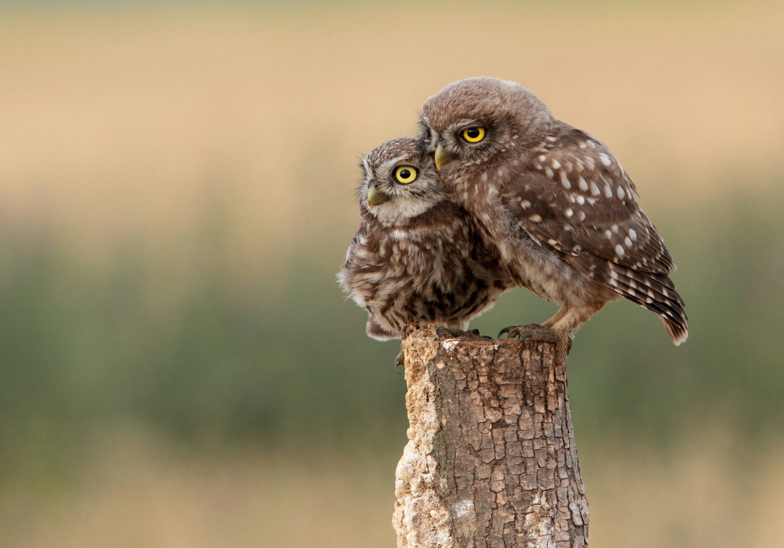

Delete this text and start step 1 here. Delete this text and start step 2 here. Delete this text and start step 3 here.
A List of Animals
It's an unordered
list
with an image inside of the unordered list.
To Top
Cat
Dog
Bird
Turtle
Frog
